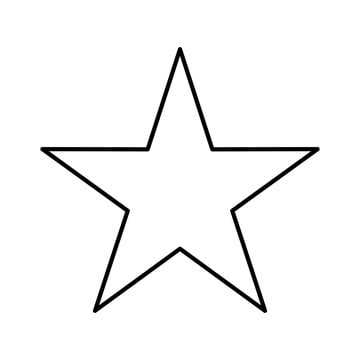

Die Hochschule Luzern ist die Fachhochschule der sechs Zentralschweizer Kantone. Mit aktuell rund 8'100 Studierenden in der Ausbildung, über 12'000 Weiterbildungsteilnehmenden – davon gut 5'000 an CAS-, DAS- und MAS-Programmen – sowie 250 neuen Projekten in Forschung und Entwicklung ist sie die grösste Bildungsinstitution im Herzen der Schweiz.
Absatz 2
Absatz 3
The Road Not Taken
By Robert Forst
Two roads diverged in a yellow wood,
And sorry I could not travel both
And be one traveler, long I stood
And looked down one as far as I could
To where it bent in the undergrowth;
Then took the other, as just as fair,
And having perhaps the better claim,
Because it was grassy and wanted wear;
Though as for that the passing there
Had worn them really about the same,
And both that morning equally lay
In leaves no step had trodden black.
Oh, I kept the first for another day!
Yet knowing how way leads on to way,
I doubted if I should ever come back.
I shall be telling this with a sigh
Somewhere ages and ages hence:
Two roads diverged in a wood, and I—
I took the one less traveled by,
And that has made all the difference.
